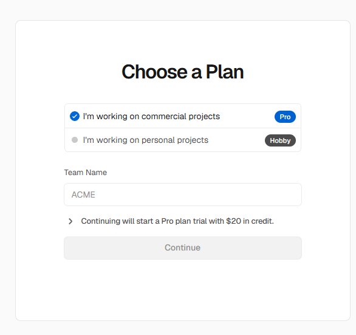
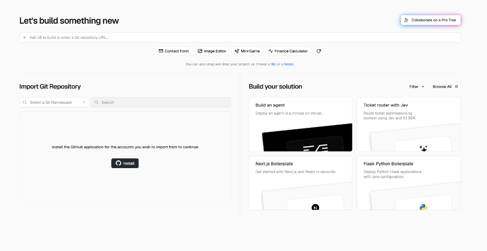
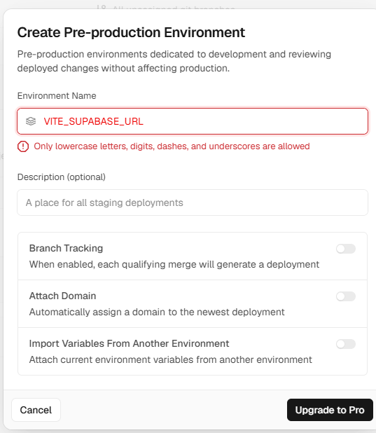
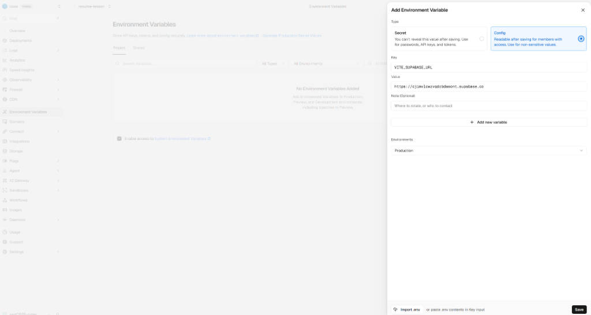

Section 3 · 투두리스트
투두리스트 만들기 — 프롬프트는 각자
무엇을
투두리스트
어디에
projects/todo-list무엇으로
Supabase · Vercel
반드시
추가 · 조회 · 수정 · 삭제 (CRUD)

📷 예시
Section 3 · 실행
확인은 AI에게, 판단은 내가
AI 실행
npm install · npm run dev↓
AI 브라우저를 열어 화면 확인
↓
나 원하는 결과인지 판단
↓ 아니라면
나 에러 메시지 · 화면을 그대로 전달 → 다시 처음으로
📷 키 입력 전

📷 키 입력 후
Section 4 · Vercel 1
Vercel 1: 가입 · GitHub 연동 · 배포
1 Continue with GitHub → Hobby (무료) 선택
2 Import Git Repository → [Install] → Only select repositories에서 내 저장소만
3 저장소 [Import] → [Deploy]

📷 Hobby 선택

📷 Import Git Repository → Install

📷 내 저장소만 선택
Section 4 · Vercel 2
Vercel 2: env 넣고 동작 확인
함정 1:
Environments 메뉴 아님'Upgrade to Pro' 팝업 = 유료 기능
👉 사이드바 Environment Variables로
👉 사이드바 Environment Variables로
함정 2:
VITE_ 변수는 Config브라우저에 공개되는 값이라 Secret 불가 → Config로 등록
저장 → Redeploy → 확인
배포 주소에서 할 일 추가 → Supabase Table Editor에 들어갔는지 확인

📷 피해야 할 Environments 팝업

📷 VITE_ 변수 Secret 에러

📷 Environment Variables에서 Config로 등록